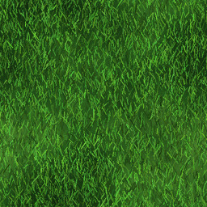
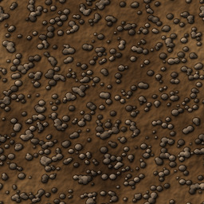
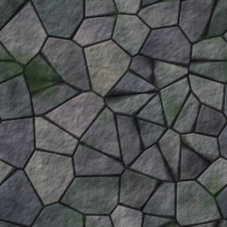
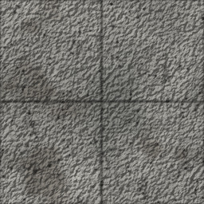
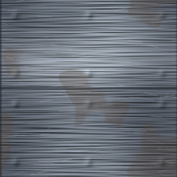

Jump to an area: Ashfall Junction Whisperwood Barrow Crypts Sunken Marsh Redrock Trail Silverado Mines Sunscorch Dunes Frostpeak Station Ember Wastes Shattered Citadel The Abyss Tombstone Gulch Thornwild Court Starship Aurora The Drowned Reach Brimstone Rail Yard Dry Gulch Bank Modern District The Proving Grounds The Primeval Rift Mars Golden Years Manor Buckstars Coffee Shop The Mammoth Caverns Nightfall Hollow
Rooms are drawn with their terrain and paths take the terrain of the room they leave. Diagonal exits are drawn too; ▲ and ▼ mark rooms with an exit up or down; stairs, ladders, portals, the elevator and the other ways between areas are listed above each map. In the game, Ashfall is mapped from the start and other areas fill in as you explore.

Grass
Dirt
Stone
Concrete
Metal$Shop+HealerFForgeCCamp/Inn!Quest giverBBossRRebirth▲▼ stairsAshfall Junction Safe hub · Old West · 24 rooms
An Old West boom town where the roads between worlds meet: the Silver Spur Saloon, shops, temple, Chrome Clinic, guild and the Hall of Rebirth. Almost every room here is safe from combat.
Ways in and out: Ashfall Square (up) leads to Portal Plaza in Modern District; Ashfall Square (down) leads to Buckstars Entrance in Buckstars Coffee Shop; North Gate (north) leads to Forest Path in Whisperwood; Old Quarry (down) leads to Mine Entrance in Silverado Mines; East Gate (east) leads to Redrock Trail, First Mile in Redrock Trail; Back Alley (in) leads to Proving Grounds Gate in The Proving Grounds.
Surface 24 rooms
Whisperwood Levels 1 to 7 · Fantasy · 17 rooms
An enchanted forest of goblins, wolves and herbs. The classic first hunting ground, with a safe camp for resting.
Ways in and out: Forest Path (south) leads to North Gate in Ashfall Junction; Cold Stream (east) leads to Marsh Edge in Sunken Marsh; Fallen Chapel (down) leads to Crypt Stairs in Barrow Crypts.
Surface 17 rooms
Barrow Crypts Levels 4 to 9 · Fantasy · 15 rooms
Skeletons, ghouls and a warlord beneath the fallen chapel. Stone corridors and a quiet reliquary.
Ways in and out: Crypt Stairs (up) leads to Fallen Chapel in Whisperwood.
Underground 15 rooms
Sunken Marsh Levels 8 to 13 · Fantasy · 15 rooms
A fetid marsh east of the forest stream: leeches, crocodiles, a hag and a hydra. Great for fish and herbs.
Ways in and out: Marsh Edge (west) leads to Cold Stream in Whisperwood; Muddy Causeway (up) leads to Briar Gate in Thornwild Court.
Surface 15 rooms
Redrock Trail Levels 12 to 16 · Old West · 13 rooms
Outlaw country east of Ashfall, with the town of Dry Gulch and its Rattlesnake Saloon. Outlaws and Red Jack Calloway guard the crossroads to the Dunes and Frostpeak.
Ways in and out: Redrock Trail, First Mile (west) leads to East Gate in Ashfall Junction; The Crossroads (east) leads to Dune Bazaar in Sunscorch Dunes; The Crossroads (north) leads to Frostpeak Station in Frostpeak Station; Rattlesnake Saloon (north) leads to Bank Lobby in Dry Gulch Bank; Old Milestone (up) leads to Gulch Gate in Tombstone Gulch.
Surface 13 rooms
Silverado Mines Levels 12 to 17 · Old West · 15 rooms
A gold-rush mining camp reached from the Old Quarry, with the Lucky Strike Saloon. Cave spiders, claim jumpers and a golem-guarded forge. Best place for ore and silver.
Ways in and out: Mine Entrance (up) leads to Old Quarry in Ashfall Junction.
Underground 15 rooms
Sunscorch Dunes Levels 18 to 24 · Fantasy · 15 rooms
A desert of mummies and sphinxes with the Dune Bazaar, a wraith obelisk, ruins and the pharaoh's tomb below.
Ways in and out: Dune Bazaar (west) leads to The Crossroads in Redrock Trail; Sand Pit (east) leads to Breach Hatch in Starship Aurora; Mirage Gate (enter portal) leads to Portal Landing in The Primeval Rift.
Surface 14 rooms
Underground 1 room
Frostpeak Station Levels 24 to 30 · Sci-fi · 18 rooms
A research outpost on an ice moon: cryo-beasts, a snowbound pass and the Cryo Titan's hall. Gear up at the station hangar.
Ways in and out: Frostpeak Station (south) leads to The Crossroads in Redrock Trail; Crystal Cave (east) leads to Ember Gate in Ember Wastes; Frozen Waterfall (east) leads to Ice Hole in The Drowned Reach; Starship Tharsis: Cockpit (launch the starship) leads to Martian Landing Pad in Mars.
Whole area 3 rooms
Surface 15 rooms
Ember Wastes Levels 30 to 34 · Sci-fi · 15 rooms
A volcanic colony world of ash, lava and plasma creatures, ending at the Magma Titan's caldera.
Ways in and out: Ember Gate (west) leads to Crystal Cave in Frostpeak Station; The Caldera (north) leads to Citadel Gate in Shattered Citadel; Basalt Steps (south) leads to Depot Gate in Brimstone Rail Yard.
Surface 15 rooms
Shattered Citadel Levels 35 to 38 · Fantasy · 15 rooms
A fallen castle ruled by the undead Dread Marshal. Its throne hides the stair to the Abyss.
Ways in and out: Citadel Gate (south) leads to The Caldera in Ember Wastes; Throne of the Dread Marshal (down) leads to The Black Stair in The Abyss; Crypt Gate (in) leads to Hunters' Chapel in Nightfall Hollow.
Surface 15 rooms
The Abyss Levels 39 to 40 · Sci-fi · 13 rooms
The void between the worlds: stalkers, horrors and the Voidlord, the final boss.
Ways in and out: The Black Stair (up) leads to Throne of the Dread Marshal in Shattered Citadel.
Underground 13 rooms
Tombstone Gulch Levels 10 to 14 · Old West · 15 rooms
A ghost town off the Redrock Trail, with the Silver Dollar Saloon, a general store and Sheriff Whitlock. Ghost outlaws, skeleton deputies and Ghost Marshal Dalton in the bank vault.
Ways in and out: Gulch Gate (down) leads to Old Milestone in Redrock Trail.
Whole area 15 rooms
Thornwild Court Levels 15 to 19 · Fantasy · 14 rooms
A fey realm of briars and mushrooms beyond the marsh causeway, with the Moonwell, the Pixie Market and Warden Sylwen. Pixie thieves, fey hounds and Thorn Queen Mab.
Ways in and out: Briar Gate (down) leads to Muddy Causeway in Sunken Marsh.
Whole area 14 rooms
Starship Aurora Levels 22 to 26 · Sci-fi · 15 rooms
A crashed starship in the Sunscorch Dunes, with a survivors galley, a med bay and a quartermaster. Security drones, mutated crew and the ship mind Helix on the bridge.
Ways in and out: Breach Hatch (west) leads to Sand Pit in Sunscorch Dunes.
Whole area 15 rooms
The Drowned Reach Levels 27 to 31 · Fantasy · 14 rooms
A sunken kingdom beneath the frozen waterfall, with the Tidal Chapel, the Pearl Market and Captain Marrow. Drowned sailors, sirens and the Leviathan of the Reach.
Ways in and out: Ice Hole (west) leads to Frozen Waterfall in Frostpeak Station.
Whole area 14 rooms
Brimstone Rail Yard Levels 32 to 36 · Old West · 14 rooms
A hellish railroad depot past the Basalt Steps, with the Brimstone Saloon Car and Stationmaster Cobb. Coal demons, imp conductors and the Brimstone Express itself.
Ways in and out: Depot Gate (north) leads to Basalt Steps in Ember Wastes.
Whole area 14 rooms
Dry Gulch Bank Levels 15 to 17 · Old West · 6 rooms
A frontier bank beside the Rattlesnake Saloon. Hold up tellers and customers, kill Bank Manager Ebenezer Crane for the vault key, then unlock and loot the vault. The Bank Robbery contract from Slick Sam can be repeated.
Ways in and out: Bank Lobby (south) leads to Rattlesnake Saloon in Redrock Trail.
Whole area 6 rooms
Modern District Levels 10 to 16 · Modern · 94 rooms
Step up through the arch in Ashfall Square into a modern strip: the Multi-Mart superstore with departments, Westfield Shopping Center, Sunset Acres Trailer Park, burgers, hot dogs, soda and two gas stations with restrooms, plus Meridian Tower, an eleven-level office building (a basement and ten floors, reached by elevator) whose top-floor CEO is guarded by three bodyguards. Modern gear, shoppers, stockers, trailer park brawlers and corporate zombies.
Ways in and out: Portal Plaza (down) leads to Ashfall Square in Ashfall Junction; Commerce Avenue, East (in) leads to Manor Lobby in Golden Years Manor; the lobbies have an elevator (type elevator) to every floor, from the basement to floor 10.
Street level: Commerce Avenue, Multi-Mart, the shopping center, trailer park and gas stations 50 rooms
Meridian Tower, floor 10: The C-Suite (monster levels 30-34) 4 rooms
Meridian Tower, floor 9: Executive Suites (monster levels 28) 4 rooms
Meridian Tower, floor 8: Research and Development (monster levels 27) 4 rooms
Meridian Tower, floor 7: Legal (monster levels 25) 4 rooms
Meridian Tower, floor 6: Marketing (monster levels 24) 4 rooms
Meridian Tower, floor 5: Information Technology (monster levels 22-23) 4 rooms
Meridian Tower, floor 4: Human Resources (monster levels 21) 4 rooms
Meridian Tower, floor 3: Accounting (monster levels 20) 4 rooms
Meridian Tower, floor 2: Customer Support (monster levels 19) 4 rooms
Meridian Tower, floor 1: Ground Floor Atrium (monster levels 18) 4 rooms
Meridian Tower, basement: Basement (monster levels 17) 4 rooms
The Proving Grounds Levels 1 to 40 · Bots · 13 rooms
A fenced training field behind a little gate in the Ashfall back alley (type in). The resident adventurers Zeph and Rook train here so they stay out of everyone else's way, and it is full of monsters from every level. You are welcome to visit.
Ways in and out: Proving Grounds Gate (out) leads to Back Alley in Ashfall Junction.
Whole area 13 rooms
The Primeval Rift Levels 21 to 28 · Prehistoric · 20 rooms
Step into the mysterious portal at the Mirage Gate in the Sunscorch Dunes (enter portal) and you arrive in a prehistoric valley of tree ferns, tar pits and dinosaurs: raptors, pterosaurs, triceratops, stegosaurs, allosaurs, a spinosaur and Rex the Tyrant. Dr. Mara Quill runs the camp at the landing.
Ways in and out: Portal Landing (enter portal) leads to Mirage Gate in Sunscorch Dunes; Stegosaur Valley (in) leads to Cave Mouth in The Mammoth Caverns.
Whole area 20 rooms
Mars Levels 30 to 40 · Sci-fi · 100 rooms
Reached by the starship Tharsis, docked beside Frostpeak Station (go in, north twice, then launch in the cockpit). A 100-room red planet of little green Martians with ray guns, laid out in a 10 by 10 grid: dust flats and craters near the landing pad, then a canyon of snipers, a Martian city of saucer pilots and officers, and the Overlord's citadel at the far corner. Commander Reyes at the landing pad gives the quests; the Martian Overlord Zorgblat carries the unique Death Ray Gun.
Whole area 100 rooms
Golden Years Manor Levels 12 to 18 · Modern · 24 rooms
A haunted retirement community at the end of Commerce Avenue (in). Its restless residents are undead and ghosts: zombie grandmas, bingo-calling ghosts, walker wraiths, denture biters and the Queen of Bingo herself, Matriarch Edna, in the Memory Care Wing. Nurse Dolores asks you to put them to rest.
Ways in and out: Manor Lobby (out) leads to Commerce Avenue, East in Modern District.
Whole area 24 rooms
Buckstars Coffee Shop Levels 1 to 4 · Modern · the newbie area · 30 rooms
The starting area for new runners: a 30-room Buckstars Coffee Shop, reached with down from Ashfall Square. Everything you would find in a coffee shop (order counter, espresso bar, pastry case, condiment bar, couches, restrooms, back rooms, drive-thru, dumpster alley) with caffeinated zombies, jittery baristas, ice machine imps and, in the Roasting Room, a level 4 boss: Overcaffeinated Brenda, the store manager. Shift Supervisor Sam gives the quest, and Barista Bree sells coffee, pastries, an apron and a tamper club.
Ways in and out: Buckstars Entrance (up) leads to Ashfall Square in Ashfall Junction.
Whole area 30 rooms
The Mammoth Caverns Levels 26 to 33 · Prehistoric · 25 rooms
A three-level cave system under the Primeval Rift, entered with in from Stegosaur Valley: the painted upper caves of the Mammoth Clan, dripping tunnels with crystals, creepers and a mammoth graveyard, and the deep throne cavern of Grog the Great, a very large caveman with a very large club. Elder Ugga keeps the fire at the cave mouth.
Ways in and out: Cave Mouth (out) leads to Stegosaur Valley in The Primeval Rift.
Upper caves 11 rooms
Middle tunnels 10 rooms
Deep cavern 4 rooms
Nightfall Hollow Levels 33 to 39 · Fantasy · 25 rooms
Past the Shattered Citadel's crypt gate (type in) lies a cursed village under a sky with no stars: vampires in their manor, werewolves in the woods, witches at the crossroads and demons at the Brimstone Gate. Father Aldric runs the hunters' chapel.
Ways in and out: Hunters' Chapel (out) leads to Crypt Gate in Shattered Citadel.
Whole area 25 rooms
Terrain
Grass
Whisperwood, Sunken Marsh, Sunscorch Dunes, Ashfall Junction
16 rooms
Dirt
Whisperwood, Sunken Marsh, Sunscorch Dunes, Ember Wastes, Redrock Trail, Silverado Mines, Frostpeak Station, Ashfall Junction, Mars
52 rooms
Stone
Ashfall Junction, Whisperwood, Barrow Crypts, Silverado Mines, Sunscorch Dunes, Frostpeak Station, Ember Wastes, Shattered Citadel, Sunken Marsh, Redrock Trail, Mars, Golden Years Manor, The Mammoth Caverns
182 rooms
Concrete
Ashfall Junction, Redrock Trail, Frostpeak Station, Shattered Citadel, Barrow Crypts, Silverado Mines, The Abyss, Tombstone Gulch, Thornwild Court, Starship Aurora, The Drowned Reach, Brimstone Rail Yard, Dry Gulch Bank, Modern District, The Proving Grounds, The Primeval Rift, Nightfall Hollow, Buckstars Coffee Shop
282 rooms
Metal
Ashfall Junction, Silverado Mines, Ember Wastes, The Abyss, Sunken Marsh, Redrock Trail, Sunscorch Dunes, Frostpeak Station, Shattered Citadel, Mars
52 rooms
Room index
The five newer areas (Tombstone Gulch, Thornwild Court, Starship Aurora, The Drowned Reach and Brimstone Rail Yard) branch off from existing rooms and have their own maps on the Areas page.
| Room | Area | Floor | Terrain | Features |
|---|---|---|---|---|
Ashfall Square town/square | Ashfall Junction | surface | concrete | ⌂ |
North Gate town/gate | Ashfall Junction | surface | concrete | ! |
Market Row town/market | Ashfall Junction | surface | concrete | $ ! |
Silver Spur Saloon town/inn | Ashfall Junction | surface | concrete | $ C ! |
Brann's Smithy town/smithy | Ashfall Junction | surface | metal | $ F ! |
Old Quarry town/quarry | Ashfall Junction | surface | stone | |
Forest Path forest/path | Whisperwood | surface | dirt | |
Reed Pond forest/pond | Whisperwood | surface | grass | |
Moonlit Clearing forest/clearing | Whisperwood | surface | grass | |
Bramble Thicket forest/thicket | Whisperwood | surface | grass | |
Cold Stream forest/stream | Whisperwood | surface | grass | |
Deep Wood forest/deep | Whisperwood | surface | grass | |
Fallen Chapel forest/ruins | Whisperwood | surface | stone | |
Crypt Stairs crypt/entry | Barrow Crypts | underground | stone | |
Hall of Urns crypt/hall | Barrow Crypts | underground | stone | |
Ossuary crypt/bones | Barrow Crypts | underground | stone | |
Burial Cells crypt/cells | Barrow Crypts | underground | stone | |
Warlord's Throne crypt/throne | Barrow Crypts | underground | stone | B |
Temple of the Dawn town/temple | Ashfall Junction | surface | stone | + ! |
Ironbound Armory town/armory | Ashfall Junction | surface | metal | $ ! |
East Gate town/eastgate | Ashfall Junction | surface | concrete | |
Chrome Clinic town/clinic | Ashfall Junction | surface | metal | + ! |
Neural Implant Lab town/implant_lab | Ashfall Junction | surface | metal | + ! |
Salvage Exchange town/salvage_exchange | Ashfall Junction | surface | metal | $ ! |
Hall of Rebirth town/hall_of_rebirth | Ashfall Junction | surface | stone | R |
Redrock Trail, First Mile road/mile1 | Redrock Trail | surface | concrete | |
Redrock Trail, Second Mile road/mile2 | Redrock Trail | surface | concrete | |
The Crossroads road/fork | Redrock Trail | surface | concrete | B |
Marsh Edge marsh/edge | Sunken Marsh | surface | grass | |
Whispering Reeds marsh/reeds | Sunken Marsh | surface | grass | |
Stinking Mire marsh/mire | Sunken Marsh | surface | dirt | |
Hag's Hut marsh/hut | Sunken Marsh | surface | dirt | |
Hydra Den marsh/den | Sunken Marsh | surface | dirt | B |
Mine Entrance mines/entry | Silverado Mines | underground | stone | |
Collapsed Tunnel mines/tunnel | Silverado Mines | underground | stone | |
Lift Shaft mines/shaft | Silverado Mines | underground | stone | |
Abandoned Forge mines/forge | Silverado Mines | underground | metal | F |
Delver's Vault mines/vault | Silverado Mines | underground | stone | B |
Dune Bazaar dunes/oasis | Sunscorch Dunes | surface | grass | $ ! |
Burning Sands dunes/sands | Sunscorch Dunes | surface | dirt | |
Black Obelisk dunes/obelisk | Sunscorch Dunes | surface | stone | |
Sunken Ruins dunes/ruins | Sunscorch Dunes | surface | stone | |
Pharaoh's Tomb dunes/tomb | Sunscorch Dunes | underground | stone | B |
Frostpeak Station frost/lodge | Frostpeak Station | surface | concrete | $ ! |
Frostpeak Pass frost/pass | Frostpeak Station | surface | stone | |
Frozen Ledge frost/ledge | Frostpeak Station | surface | stone | |
Crystal Cave frost/cave | Frostpeak Station | surface | stone | |
The Cryo Titan's Hall frost/hall | Frostpeak Station | surface | stone | B |
Ember Gate ember/gate | Ember Wastes | surface | stone | |
Ashfields ember/ash | Ember Wastes | surface | dirt | |
River of Fire ember/lava | Ember Wastes | surface | stone | |
Forge-Temple ember/temple | Ember Wastes | surface | metal | F |
The Caldera ember/caldera | Ember Wastes | surface | stone | B |
Citadel Gate cit/gate | Shattered Citadel | surface | stone | |
Hall of Banners cit/hall | Shattered Citadel | surface | stone | |
Ruined Library cit/library | Shattered Citadel | surface | stone | |
Haunted Barracks cit/barracks | Shattered Citadel | surface | concrete | |
Throne of the Dread Marshal cit/throne | Shattered Citadel | surface | stone | B |
The Black Stair abyss/stair | The Abyss | underground | metal | |
The Rift abyss/rift | The Abyss | underground | metal | |
Heart of the Void abyss/core | The Abyss | underground | metal | B |
Mossy Hollow forest/mossy_hollow | Whisperwood | surface | grass | |
Fern Dell forest/fern_dell | Whisperwood | surface | grass | |
Hunter's Blind forest/hunters_blind | Whisperwood | surface | dirt | |
Fallen Giant forest/fallen_giant | Whisperwood | surface | dirt | |
Twilight Glade forest/twilight_glade | Whisperwood | surface | grass | |
Spider Grove forest/spider_grove | Whisperwood | surface | grass | |
Owl Roost forest/owl_roost | Whisperwood | surface | dirt | |
Hermit's Clearing forest/hermits_clearing | Whisperwood | surface | grass | C ! |
Hollow Oak forest/hollow_oak | Whisperwood | surface | dirt | |
Thornwall forest/thornwall | Whisperwood | surface | dirt | |
Collapsed Vault crypt/collapsed_vault | Barrow Crypts | underground | stone | |
Weeping Chamber crypt/weeping_chamber | Barrow Crypts | underground | stone | |
Bone Gallery crypt/bone_gallery | Barrow Crypts | underground | stone | |
Sealed Passage crypt/sealed_passage | Barrow Crypts | underground | stone | |
Embalming Room crypt/embalming_room | Barrow Crypts | underground | concrete | |
Altar of Ash crypt/altar_of_ash | Barrow Crypts | underground | stone | |
Flooded Crypt crypt/flooded_crypt | Barrow Crypts | underground | stone | |
Ghoul Warren crypt/ghoul_warren | Barrow Crypts | underground | stone | |
Reliquary crypt/reliquary | Barrow Crypts | underground | stone | C ! |
Shadowed Nave crypt/shadowed_nave | Barrow Crypts | underground | stone | |
Sunken Boat marsh/sunken_boat | Sunken Marsh | surface | metal | C ! |
Frog Pond marsh/frog_pond | Sunken Marsh | surface | grass | |
Rotting Pier marsh/rotting_pier | Sunken Marsh | surface | dirt | |
Fungus Grotto marsh/fungus_grotto | Sunken Marsh | surface | dirt | |
Peat Bog marsh/peat_bog | Sunken Marsh | surface | dirt | |
Heron Rookery marsh/heron_rookery | Sunken Marsh | surface | grass | |
Witch Lights marsh/witch_lights | Sunken Marsh | surface | dirt | |
Drowned Chapel marsh/drowned_chapel | Sunken Marsh | surface | stone | |
Muddy Causeway marsh/muddy_causeway | Sunken Marsh | surface | dirt | |
Leech Pool marsh/leech_pool | Sunken Marsh | surface | dirt | |
Burnt Wagon road/burnt_wagon | Redrock Trail | surface | concrete | |
Dry Wash road/dry_wash | Redrock Trail | surface | dirt | |
Watch Hill road/watch_hill | Redrock Trail | surface | dirt | |
Rattlesnake Saloon road/abandoned_inn | Redrock Trail | surface | concrete | $ C ! |
Outlaw Camp road/bandit_camp | Redrock Trail | surface | dirt | |
Old Milestone road/old_milestone | Redrock Trail | surface | concrete | |
Shepherd's Rest road/shepherds_rest | Redrock Trail | surface | stone | |
Ambush Gully road/ambush_gully | Redrock Trail | surface | dirt | |
Toll Bridge road/toll_bridge | Redrock Trail | surface | metal | |
Hanging Tree road/hanging_tree | Redrock Trail | surface | dirt | |
Ore Cart Track mines/ore_cart_track | Silverado Mines | underground | metal | |
Flooded Drift mines/flooded_drift | Silverado Mines | underground | stone | |
Timber Cavern mines/timber_cavern | Silverado Mines | underground | dirt | |
Crystal Seam mines/crystal_seam | Silverado Mines | underground | stone | |
Lucky Strike Saloon mines/foremans_office | Silverado Mines | underground | concrete | $ C ! |
Dripping Gallery mines/dripping_gallery | Silverado Mines | underground | stone | |
Narrow Crawl mines/narrow_crawl | Silverado Mines | underground | dirt | |
Smelter Hall mines/smelter_hall | Silverado Mines | underground | metal | |
Collapsed Stope mines/collapsed_stope | Silverado Mines | underground | dirt | |
Echoing Chamber mines/echoing_chamber | Silverado Mines | underground | stone | |
Cracked Dune dunes/cracked_dune | Sunscorch Dunes | surface | dirt | |
Dry Well dunes/dry_well | Sunscorch Dunes | surface | stone | |
Caravan Graveyard dunes/caravan_graveyard | Sunscorch Dunes | surface | metal | |
Scorched Mesa dunes/scorched_mesa | Sunscorch Dunes | surface | dirt | |
Sand Pit dunes/sand_pit | Sunscorch Dunes | surface | dirt | |
Nomad Camp dunes/nomad_camp | Sunscorch Dunes | surface | dirt | C ! |
Whispering Dune dunes/whispering_dune | Sunscorch Dunes | surface | dirt | |
Broken Statue dunes/broken_statue | Sunscorch Dunes | surface | stone | |
Salt Flat dunes/salt_flat | Sunscorch Dunes | surface | dirt | |
Mirage Gate dunes/mirage_gate | Sunscorch Dunes | surface | stone | |
Snowdrift Hollow frost/snowdrift_hollow | Frostpeak Station | surface | dirt | |
Frozen Waterfall frost/frozen_waterfall | Frostpeak Station | surface | stone | |
Avalanche Slope frost/avalanche_slope | Frostpeak Station | surface | stone | |
Ice Bridge frost/ice_bridge | Frostpeak Station | surface | stone | |
Hermit's Habitat frost/hermits_igloo | Frostpeak Station | surface | stone | C ! |
Glacier Crack frost/glacier_crack | Frostpeak Station | surface | stone | |
Wind-Scoured Peak frost/windscoured_peak | Frostpeak Station | surface | stone | |
Abandoned Research Camp frost/frozen_camp | Frostpeak Station | surface | metal | |
Crystal Chasm frost/crystal_chasm | Frostpeak Station | surface | stone | |
Blizzard Gap frost/blizzard_gap | Frostpeak Station | surface | stone | |
Sulfur Vent ember/sulfur_vent | Ember Wastes | surface | stone | |
Obsidian Field ember/obsidian_field | Ember Wastes | surface | stone | |
Lava Tube ember/lava_tube | Ember Wastes | surface | stone | |
Scorched Camp ember/scorched_camp | Ember Wastes | surface | dirt | C ! |
Basalt Steps ember/basalt_steps | Ember Wastes | surface | stone | |
Smoking Crater ember/smoking_crater | Ember Wastes | surface | stone | |
Ash Dune ember/ash_dune | Ember Wastes | surface | dirt | |
Geyser Basin ember/geyser_basin | Ember Wastes | surface | stone | |
Molten Pool ember/molten_pool | Ember Wastes | surface | stone | |
Charred Grove ember/charred_grove | Ember Wastes | surface | dirt | |
Armory Ruins cit/armory_ruins | Shattered Citadel | surface | metal | |
Collapsed Rampart cit/collapsed_rampart | Shattered Citadel | surface | stone | |
Chapel of Bells cit/chapel_of_bells | Shattered Citadel | surface | stone | |
Dungeon Stair cit/dungeon_stair | Shattered Citadel | surface | stone | |
Banquet Hall cit/banquet_hall | Shattered Citadel | surface | concrete | |
War Room cit/war_room | Shattered Citadel | surface | metal | |
Cursed Gallery cit/cursed_gallery | Shattered Citadel | surface | stone | |
Watchtower Top cit/watchtower_top | Shattered Citadel | surface | stone | |
Guard Post cit/guard_post | Shattered Citadel | surface | concrete | C ! |
Crypt Gate cit/crypt_gate | Shattered Citadel | surface | stone | |
Whispering Void abyss/whispering_void | The Abyss | underground | metal | |
Fractured Stair abyss/fractured_stair | The Abyss | underground | metal | |
Maw of Stars abyss/maw_of_stars | The Abyss | underground | metal | |
Weeping Chasm abyss/weeping_chasm | The Abyss | underground | metal | |
Echo Chamber abyss/echo_chamber | The Abyss | underground | metal | |
Shadow Bridge abyss/shadow_bridge | The Abyss | underground | metal | |
Dream Fragment abyss/dream_fragment | The Abyss | underground | concrete | C ! |
Eye of Silence abyss/eye_of_silence | The Abyss | underground | metal | |
Hollow Throne abyss/hollow_throne | The Abyss | underground | metal | |
Edge of Nothing abyss/edge_of_nothing | The Abyss | underground | metal | |
Adventurers' Guild town/adventurers_guild | Ashfall Junction | surface | concrete | ! G |
Cobbler Lane town/cobbler_lane | Ashfall Junction | surface | concrete | |
Cooper's Yard town/coopers_yard | Ashfall Junction | surface | dirt | |
Baker's Row town/bakers_row | Ashfall Junction | surface | concrete | |
Chapel Garden town/chapel_garden | Ashfall Junction | surface | grass | |
Watchtower town/watchtower | Ashfall Junction | surface | metal | |
Old Well town/old_well | Ashfall Junction | surface | stone | |
Stables town/stables | Ashfall Junction | surface | dirt | |
Alchemist's Tower town/alchemists_tower | Ashfall Junction | surface | stone | |
Back Alley town/back_alley | Ashfall Junction | surface | concrete | |
Gulch Gate gulch/a | Tombstone Gulch | separate realm | concrete | |
Main Street gulch/b | Tombstone Gulch | separate realm | concrete | |
Silver Dollar Saloon gulch/c | Tombstone Gulch | separate realm | concrete | $ C ! |
Undertaker's Parlor gulch/d | Tombstone Gulch | separate realm | concrete | |
Sheriff's Office gulch/e | Tombstone Gulch | separate realm | concrete | ! |
Gulch General Store gulch/f | Tombstone Gulch | separate realm | concrete | $ ! |
Dusty Crossroads gulch/g | Tombstone Gulch | separate realm | concrete | |
Bank of Tombstone gulch/h | Tombstone Gulch | separate realm | concrete | |
Abandoned Stable gulch/l | Tombstone Gulch | separate realm | concrete | |
Church of Ashes gulch/i | Tombstone Gulch | separate realm | concrete | |
Boot Hill Cemetery gulch/j | Tombstone Gulch | separate realm | concrete | |
Gallows Yard gulch/k | Tombstone Gulch | separate realm | concrete | |
The Vault gulch/o | Tombstone Gulch | separate realm | concrete | B |
Dry Well gulch/m | Tombstone Gulch | separate realm | concrete | |
Gold Rush Alley gulch/n | Tombstone Gulch | separate realm | concrete | |
Briar Gate thorn/a | Thornwild Court | separate realm | concrete | |
Mushroom Ring thorn/b | Thornwild Court | separate realm | concrete | |
Moonwell thorn/c | Thornwild Court | separate realm | concrete | + C ! |
Pixie Market thorn/d | Thornwild Court | separate realm | concrete | $ ! |
Thistle Bridge thorn/e | Thornwild Court | separate realm | concrete | |
Hedge Maze thorn/f | Thornwild Court | separate realm | concrete | |
Dreaming Pool thorn/g | Thornwild Court | separate realm | concrete | |
Fae Library thorn/h | Thornwild Court | separate realm | concrete | |
Glowing Grove thorn/i | Thornwild Court | separate realm | concrete | |
Nightshade Garden thorn/j | Thornwild Court | separate realm | concrete | |
Hollow Oak thorn/k | Thornwild Court | separate realm | concrete | |
Toadstool Hall thorn/l | Thornwild Court | separate realm | concrete | |
Sunlit Glade thorn/m | Thornwild Court | separate realm | concrete | |
Court of Thorns thorn/n | Thornwild Court | separate realm | concrete | B |
Breach Hatch aurora/a | Starship Aurora | separate realm | concrete | |
Cargo Bay aurora/b | Starship Aurora | separate realm | concrete | |
Corridor Alpha aurora/c | Starship Aurora | separate realm | concrete | |
Galley aurora/d | Starship Aurora | separate realm | concrete | $ C ! |
Crew Quarters aurora/e | Starship Aurora | separate realm | concrete | |
Med Bay aurora/f | Starship Aurora | separate realm | concrete | + |
Engineering aurora/g | Starship Aurora | separate realm | concrete | F |
Quartermaster Locker aurora/h | Starship Aurora | separate realm | concrete | $ ! |
Hydroponics aurora/i | Starship Aurora | separate realm | concrete | |
Corridor Beta aurora/j | Starship Aurora | separate realm | concrete | |
Observation Deck aurora/k | Starship Aurora | separate realm | concrete | |
Reactor Core aurora/l | Starship Aurora | separate realm | concrete | |
Escape Pod Bay aurora/m | Starship Aurora | separate realm | concrete | |
AI Core Antechamber aurora/n | Starship Aurora | separate realm | concrete | |
Bridge aurora/o | Starship Aurora | separate realm | concrete | B |
Ice Hole reach/a | The Drowned Reach | separate realm | concrete | |
Sunken Stair reach/b | The Drowned Reach | separate realm | concrete | |
Tidal Chapel reach/c | The Drowned Reach | separate realm | concrete | + C ! |
Pearl Market reach/d | The Drowned Reach | separate realm | concrete | $ ! |
Whale Bone Arch reach/e | The Drowned Reach | separate realm | concrete | |
Kelp Forest reach/f | The Drowned Reach | separate realm | concrete | |
Shipwreck Galleon reach/g | The Drowned Reach | separate realm | concrete | |
Drowned Library reach/h | The Drowned Reach | separate realm | concrete | |
Coral Hall reach/i | The Drowned Reach | separate realm | concrete | |
Siren's Rock reach/j | The Drowned Reach | separate realm | concrete | |
Pearl Grotto reach/k | The Drowned Reach | separate realm | concrete | |
Abyssal Trench reach/l | The Drowned Reach | separate realm | concrete | |
Trident Hall reach/m | The Drowned Reach | separate realm | concrete | |
Coral Throne reach/n | The Drowned Reach | separate realm | concrete | B |
Depot Gate rail/a | Brimstone Rail Yard | separate realm | concrete | |
Ticket Office rail/b | Brimstone Rail Yard | separate realm | concrete | |
Brimstone Saloon Car rail/c | Brimstone Rail Yard | separate realm | concrete | $ C ! |
Stationmaster's Office rail/d | Brimstone Rail Yard | separate realm | concrete | ! |
Telegraph Hut rail/e | Brimstone Rail Yard | separate realm | concrete | |
Coal Yard rail/f | Brimstone Rail Yard | separate realm | concrete | |
Switching Yard rail/g | Brimstone Rail Yard | separate realm | concrete | |
Roundhouse rail/h | Brimstone Rail Yard | separate realm | concrete | F |
Water Tower rail/i | Brimstone Rail Yard | separate realm | concrete | |
Cattle Cars rail/j | Brimstone Rail Yard | separate realm | concrete | |
Boxcar Boneyard rail/k | Brimstone Rail Yard | separate realm | concrete | |
Turntable rail/l | Brimstone Rail Yard | separate realm | concrete | |
Signal Tower rail/m | Brimstone Rail Yard | separate realm | concrete | |
Hellmouth Tunnel rail/n | Brimstone Rail Yard | separate realm | concrete | B |
Bank Lobby bank/a | Dry Gulch Bank | separate realm | concrete | |
Teller Cages bank/b | Dry Gulch Bank | separate realm | concrete | |
Manager's Office bank/c | Dry Gulch Bank | separate realm | concrete | B |
Vault Corridor bank/d | Dry Gulch Bank | separate realm | concrete | |
The Vault bank/e | Dry Gulch Bank | separate realm | concrete | |
Counting Room bank/f | Dry Gulch Bank | separate realm | concrete | |
Portal Plaza modern/gate | Modern District | separate realm | concrete | |
Commerce Avenue, West modern/s1 | Modern District | separate realm | concrete | |
Commerce Avenue modern/s2 | Modern District | separate realm | concrete | |
Commerce Avenue, Multi-Mart Corner modern/s3 | Modern District | separate realm | concrete | |
Commerce Avenue, Shopping Center Corner modern/s4 | Modern District | separate realm | concrete | |
Commerce Avenue, East modern/s5 | Modern District | separate realm | concrete | |
Sunset Acres Gate modern/tpg | Modern District | separate realm | concrete | |
QuikStop Gas: Pumps modern/g1p | Modern District | separate realm | concrete | |
QuikStop Gas: Convenience Store modern/g1s | Modern District | separate realm | concrete | $ C ! |
QuikStop Gas: Restroom modern/g1r | Modern District | separate realm | concrete | |
Burger Barn: Parking Lot modern/bbl | Modern District | separate realm | concrete | |
Burger Barn modern/bbi | Modern District | separate realm | concrete | $ C ! |
Multi-Mart Parking Lot modern/mml | Modern District | separate realm | concrete | |
Multi-Mart Entrance modern/mme | Modern District | separate realm | concrete | |
Multi-Mart: Grocery modern/gro | Modern District | separate realm | concrete | $ ! |
Multi-Mart: Clothing modern/clo | Modern District | separate realm | concrete | $ ! |
Multi-Mart: Electronics modern/ele | Modern District | separate realm | concrete | $ ! |
Multi-Mart: Home and Garden modern/hom | Modern District | separate realm | concrete | |
Multi-Mart: Main Aisle modern/ais | Modern District | separate realm | concrete | |
Multi-Mart: Toys modern/toy | Modern District | separate realm | concrete | |
Multi-Mart: Pharmacy modern/pha | Modern District | separate realm | concrete | $ ! |
Multi-Mart: Stockroom modern/sto | Modern District | separate realm | concrete | |
Multi-Mart: Sporting Goods modern/spo | Modern District | separate realm | concrete | $ ! |
Multi-Mart: Manager's Office modern/mgr | Modern District | separate realm | concrete | B |
Multi-Mart: Customer Service modern/cus | Modern District | separate realm | concrete | ! |
Multi-Mart: Auto Center modern/aut | Modern District | separate realm | concrete | $ ! |
Westfield Shopping Center: Plaza modern/plz | Modern District | separate realm | concrete | |
TechHut Electronics modern/tec | Modern District | separate realm | concrete | $ ! |
Dollar Palace modern/dol | Modern District | separate realm | concrete | $ ! |
Shopping Center: Mall Corridor modern/mid | Modern District | separate realm | concrete | |
Paws and Claws Pet Store modern/pet | Modern District | separate realm | concrete | $ ! |
Page Turner Books modern/boo | Modern District | separate realm | concrete | |
Pixel Palace Arcade modern/arc | Modern District | separate realm | concrete | |
Food Court modern/foo | Modern District | separate realm | concrete | $ C ! |
Hot Dog Hut modern/hdh | Modern District | separate realm | concrete | $ ! |
Sunset Acres: Lot Road modern/tpr1 | Modern District | separate realm | concrete | |
Sunset Acres: Middle Row modern/tpr2 | Modern District | separate realm | concrete | |
Sunset Acres: East Row modern/tpr3 | Modern District | separate realm | concrete | |
Sunset Acres: Dumpster Alley modern/dmp | Modern District | separate realm | concrete | B |
Trailer 1: The Pink Flamingo modern/t1 | Modern District | separate realm | concrete | |
Trailer 2: The Doublewide modern/t2 | Modern District | separate realm | concrete | |
Trailer 3: The Gator Shack modern/t3 | Modern District | separate realm | concrete | |
Trailer 4: The Rusty Airstream modern/t4 | Modern District | separate realm | concrete | |
Trailer 5: The Gnome Home modern/t5 | Modern District | separate realm | concrete | |
Trailer 6: The Vacant One modern/t6 | Modern District | separate realm | concrete | |
Sunset Acres: Park Office modern/tof | Modern District | separate realm | concrete | C ! |
Fuel Stop: Pumps modern/g2p | Modern District | separate realm | concrete | |
Fuel Stop: Convenience Store modern/g2s | Modern District | separate realm | concrete | $ ! |
Fuel Stop: Restroom modern/g2r | Modern District | separate realm | concrete | |
Proving Grounds Gate grounds/gate | The Proving Grounds | underground | concrete | |
Training Yard grounds/yard | The Proving Grounds | underground | concrete | $ + C ! |
Rat Run grounds/f1 | The Proving Grounds | underground | concrete | |
Bone Yard grounds/f2 | The Proving Grounds | underground | concrete | |
Reed Pit grounds/f3 | The Proving Grounds | underground | concrete | |
Spider Hollow grounds/f4 | The Proving Grounds | underground | concrete | |
Golem Court grounds/f5 | The Proving Grounds | underground | concrete | |
Sand Ring grounds/f6 | The Proving Grounds | underground | concrete | |
Frozen Pen grounds/f7 | The Proving Grounds | underground | concrete | |
Ember Pen grounds/f8 | The Proving Grounds | underground | concrete | |
Cinder Court grounds/f9 | The Proving Grounds | underground | concrete | |
Void Ring grounds/f10 | The Proving Grounds | underground | concrete | |
The Turn grounds/mid | The Proving Grounds | underground | concrete | |
Portal Landing prime/landing | The Primeval Rift | separate realm | concrete | $ C ! |
Primeval Trail prime/trail | The Primeval Rift | separate realm | concrete | |
Tar Pits prime/tar | The Primeval Rift | separate realm | concrete | |
Raptor Nest prime/nest | The Primeval Rift | separate realm | concrete | |
Bone Pass prime/pass | The Primeval Rift | separate realm | concrete | |
The Tyrant's Arena prime/arena | The Primeval Rift | separate realm | concrete | B |
Fern Forest prime/fern | The Primeval Rift | separate realm | concrete | |
Cycad Grove prime/cyc | The Primeval Rift | separate realm | concrete | |
Mudflats prime/mud | The Primeval Rift | separate realm | concrete | |
Amber Hollow prime/amber | The Primeval Rift | separate realm | concrete | |
Pteranodon Ridge prime/ridge1 | The Primeval Rift | separate realm | concrete | |
Skyward Cliffs prime/ridge2 | The Primeval Rift | separate realm | concrete | |
The Eyrie prime/ridge3 | The Primeval Rift | separate realm | concrete | |
Fern Swamp prime/swamp | The Primeval Rift | separate realm | concrete | |
Roaring River prime/river | The Primeval Rift | separate realm | concrete | |
Triceratops Plains prime/herd | The Primeval Rift | separate realm | concrete | |
Allosaurus Gorge prime/gorge | The Primeval Rift | separate realm | concrete | |
Spinosaur Shallows prime/shallows | The Primeval Rift | separate realm | concrete | |
Dino Lagoon prime/lagoon | The Primeval Rift | separate realm | concrete | |
Stegosaur Valley prime/valley | The Primeval Rift | separate realm | concrete | |
Hunters' Chapel hollow/chapel | Nightfall Hollow | separate realm | concrete | $ + C ! |
Moonless Road hollow/road | Nightfall Hollow | separate realm | concrete | |
Hollowmoor Square hollow/square | Nightfall Hollow | separate realm | concrete | |
Bone Bridge hollow/bridge | Nightfall Hollow | separate realm | concrete | |
Cursed Crossroads hollow/cross | Nightfall Hollow | separate realm | concrete | |
Brimstone Gate hollow/gateway | Nightfall Hollow | separate realm | concrete | |
The Hellmouth hollow/pit | Nightfall Hollow | separate realm | concrete | B |
Manor Gate hollow/manorgate | Nightfall Hollow | separate realm | concrete | |
Blood Hall hollow/hall | Nightfall Hollow | separate realm | concrete | |
Crimson Ballroom hollow/ball | Nightfall Hollow | separate realm | concrete | |
Forbidden Library hollow/lib | Nightfall Hollow | separate realm | concrete | |
Wine Cellar hollow/cellar | Nightfall Hollow | separate realm | concrete | |
Bat Tower hollow/tower | Nightfall Hollow | separate realm | concrete | |
The Count's Crypt hollow/crypt | Nightfall Hollow | separate realm | concrete | B |
Howling Woods hollow/woods1 | Nightfall Hollow | separate realm | concrete | |
Moonlit Glade hollow/glade | Nightfall Hollow | separate realm | concrete | |
Silver Clearing hollow/clear | Nightfall Hollow | separate realm | concrete | |
Hunters' Ruins hollow/hunter | Nightfall Hollow | separate realm | concrete | |
The Alpha's Den hollow/den | Nightfall Hollow | separate realm | concrete | |
Witches' Bog hollow/bog | Nightfall Hollow | separate realm | concrete | |
Hag's Cottage hollow/hut | Nightfall Hollow | separate realm | concrete | |
Coven Circle hollow/circle | Nightfall Hollow | separate realm | concrete | |
The Great Cauldron hollow/cauldron | Nightfall Hollow | separate realm | concrete | |
Court of Fire hollow/fire | Nightfall Hollow | separate realm | concrete | |
Hall of Chains hollow/chains | Nightfall Hollow | separate realm | concrete | |
Martian Landing Pad mars/0_0 | Mars | separate realm | dirt | $ ! |
Silent Plain mars/1_0 | Mars | separate realm | dirt | |
Martian Bazaar Ruins mars/2_0 | Mars | separate realm | dirt | |
Salt Ridge mars/3_0 | Mars | separate realm | dirt | |
Ochre Rise mars/4_0 | Mars | separate realm | dirt | |
Frozen Scar mars/5_0 | Mars | separate realm | stone | |
Smoking Pit mars/6_0 | Mars | separate realm | stone | |
Old Cairn mars/7_0 | Mars | separate realm | stone | |
Jagged Dish mars/8_0 | Mars | separate realm | stone | |
Twisting Passage mars/9_0 | Mars | separate realm | stone | |
Cracked Basin mars/0_1 | Mars | separate realm | dirt | |
Rusty Flat mars/1_1 | Mars | separate realm | dirt | |
Dry Plain mars/2_1 | Mars | separate realm | dirt | |
Pitted Gully mars/3_1 | Mars | separate realm | dirt | |
Broken Rim mars/4_1 | Mars | separate realm | stone | |
Deep Fissure mars/5_1 | Mars | separate realm | stone | |
Hollow Scar mars/6_1 | Mars | separate realm | stone | |
Broken Pit mars/7_1 | Mars | separate realm | stone | |
Echoing Defile mars/8_1 | Mars | separate realm | stone | |
Red Spire mars/9_1 | Mars | separate realm | stone | |
Dry Hollow mars/0_2 | Mars | separate realm | dirt | |
Dusty Basin mars/1_2 | Mars | separate realm | dirt | |
Windswept Flat mars/2_2 | Mars | separate realm | dirt | |
Glowing Pocket mars/3_2 | Mars | separate realm | stone | |
Hollow Ledge mars/4_2 | Mars | separate realm | stone | |
Shattered Rim mars/5_2 | Mars | separate realm | stone | |
Glowing Fissure mars/6_2 | Mars | separate realm | stone | |
The Great Crater mars/7_2 | Mars | separate realm | stone | |
Painted Arch mars/8_2 | Mars | separate realm | stone | |
Narrow Defile mars/9_2 | Mars | separate realm | stone | |
Windswept Wash mars/0_3 | Mars | separate realm | dirt | |
Crimson Hollow mars/1_3 | Mars | separate realm | dirt | |
Quiet Bowl mars/2_3 | Mars | separate realm | stone | |
Shattered Crater mars/3_3 | Mars | separate realm | stone | |
Jagged Pocket mars/4_3 | Mars | separate realm | stone | |
Quiet Ledge mars/5_3 | Mars | separate realm | stone | |
Forgotten Gorge mars/6_3 | Mars | separate realm | stone | |
Narrow Stair mars/7_3 | Mars | separate realm | stone | |
Hidden Wall mars/8_3 | Mars | separate realm | stone | |
Forgotten Arch mars/9_3 | Mars | separate realm | stone | |
Dusty Dune mars/0_4 | Mars | separate realm | dirt | |
Deep Cairn mars/1_4 | Mars | separate realm | stone | |
Frozen Dish mars/2_4 | Mars | separate realm | stone | |
Smoking Bowl mars/3_4 | Mars | separate realm | stone | |
Saucer Hangar mars/4_4 | Mars | separate realm | stone | |
Sunken Cut mars/5_4 | Mars | separate realm | stone | |
Towering Chasm mars/6_4 | Mars | separate realm | stone | |
Carved Gorge mars/7_4 | Mars | separate realm | stone | |
Sunken Stair mars/8_4 | Mars | separate realm | stone | |
Canyon Overlook mars/9_4 | Mars | separate realm | metal | |
Quiet Scar mars/0_5 | Mars | separate realm | stone | |
Shattered Pit mars/1_5 | Mars | separate realm | stone | |
Glowing Cairn mars/2_5 | Mars | separate realm | stone | |
Hollow Dish mars/3_5 | Mars | separate realm | stone | |
Painted Passage mars/4_5 | Mars | separate realm | stone | |
Carved Canyon mars/5_5 | Mars | separate realm | stone | |
Red Cut mars/6_5 | Mars | separate realm | stone | |
Twisting Chasm mars/7_5 | Mars | separate realm | stone | |
Silver Plaza mars/8_5 | Mars | separate realm | metal | |
Silent Tower mars/9_5 | Mars | separate realm | metal | |
Jagged Fissure mars/0_6 | Mars | separate realm | stone | |
Smoking Dish mars/1_6 | Mars | separate realm | stone | |
Old Bowl mars/2_6 | Mars | separate realm | stone | |
Sunken Defile mars/3_6 | Mars | separate realm | stone | |
Hidden Spire mars/4_6 | Mars | separate realm | stone | |
Forgotten Passage mars/5_6 | Mars | separate realm | stone | |
Echoing Canyon mars/6_6 | Mars | separate realm | stone | |
Neon Gate mars/7_6 | Mars | separate realm | metal | |
Ruined Lane mars/8_6 | Mars | separate realm | metal | |
Humming Plaza mars/9_6 | Mars | separate realm | metal | |
Old Rim mars/0_7 | Mars | separate realm | stone | |
Frozen Cairn mars/1_7 | Mars | separate realm | stone | |
Towering Wall mars/2_7 | Mars | separate realm | stone | |
Carved Arch mars/3_7 | Mars | separate realm | stone | |
Red Canyon mars/4_7 | Mars | separate realm | stone | |
Towering Spire mars/5_7 | Mars | separate realm | stone | |
Mirrored Yard mars/6_7 | Mars | separate realm | metal | |
Humming Street mars/7_7 | Mars | separate realm | metal | |
Glass Gate mars/8_7 | Mars | separate realm | metal | |
Mirrored Lane mars/9_7 | Mars | separate realm | metal | |
Smoking Ledge mars/0_8 | Mars | separate realm | stone | |
Echoing Gorge mars/1_8 | Mars | separate realm | stone | |
Red Stair mars/2_8 | Mars | separate realm | stone | |
Twisting Wall mars/3_8 | Mars | separate realm | stone | |
Echoing Passage mars/4_8 | Mars | separate realm | stone | |
Copper Alley mars/5_8 | Mars | separate realm | metal | |
Glass Market mars/6_8 | Mars | separate realm | metal | |
Lamp-lit Yard mars/7_8 | Mars | separate realm | metal | |
Copper Street mars/8_8 | Mars | separate realm | metal | |
Royal Walk mars/9_8 | Mars | separate realm | metal | |
Hidden Cut mars/0_9 | Mars | separate realm | stone | |
Painted Chasm mars/1_9 | Mars | separate realm | stone | |
Narrow Arch mars/2_9 | Mars | separate realm | stone | |
Hidden Defile mars/3_9 | Mars | separate realm | stone | |
Crowded Terrace mars/4_9 | Mars | separate realm | metal | |
Lamp-lit Arcade mars/5_9 | Mars | separate realm | metal | |
Silent Alley mars/6_9 | Mars | separate realm | metal | |
Crowded Market mars/7_9 | Mars | separate realm | metal | |
Endless Gate mars/8_9 | Mars | separate realm | metal | |
Overlord's Throne Room mars/9_9 | Mars | separate realm | metal | B |
Starship Tharsis: Boarding Ramp frost/ship_ramp | Frostpeak Station | underground | metal | |
Starship Tharsis: Passenger Deck frost/ship_deck | Frostpeak Station | underground | metal | |
Starship Tharsis: Cockpit frost/ship_cockpit | Frostpeak Station | underground | metal | |
Manor Lobby manor/0_0 | Golden Years Manor | separate realm | stone | $ ! |
Sunroom manor/1_0 | Golden Years Manor | separate realm | stone | |
Dining Hall manor/2_0 | Golden Years Manor | separate realm | stone | |
Kitchen manor/3_0 | Golden Years Manor | separate realm | stone | |
Pantry manor/4_0 | Golden Years Manor | separate realm | stone | |
Laundry Room manor/5_0 | Golden Years Manor | separate realm | stone | |
Activity Room manor/0_1 | Golden Years Manor | separate realm | stone | |
Bingo Hall manor/1_1 | Golden Years Manor | separate realm | stone | |
Craft Room manor/2_1 | Golden Years Manor | separate realm | stone | |
Library manor/3_1 | Golden Years Manor | separate realm | stone | |
Chapel manor/4_1 | Golden Years Manor | separate realm | stone | |
Tea Parlor manor/5_1 | Golden Years Manor | separate realm | stone | |
East Wing Corridor manor/0_2 | Golden Years Manor | separate realm | stone | |
Resident Room 101 manor/1_2 | Golden Years Manor | separate realm | stone | |
Resident Room 102 manor/2_2 | Golden Years Manor | separate realm | stone | |
Resident Room 103 manor/3_2 | Golden Years Manor | separate realm | stone | |
Nurses Station manor/4_2 | Golden Years Manor | separate realm | stone | |
Medication Room manor/5_2 | Golden Years Manor | separate realm | stone | |
Garden Path manor/0_3 | Golden Years Manor | separate realm | stone | |
Shuffleboard Court manor/1_3 | Golden Years Manor | separate realm | stone | |
Gazebo Pond manor/2_3 | Golden Years Manor | separate realm | stone | |
Greenhouse manor/3_3 | Golden Years Manor | separate realm | stone | |
Hobby Barn manor/4_3 | Golden Years Manor | separate realm | stone | |
Memory Care Wing manor/5_3 | Golden Years Manor | separate realm | stone | B |
Buckstars Entrance buck/0_0 | Buckstars Coffee Shop | separate realm | concrete | C ! |
Order Counter buck/1_0 | Buckstars Coffee Shop | separate realm | concrete | $ ! |
Espresso Bar buck/2_0 | Buckstars Coffee Shop | separate realm | concrete | |
Pastry Case buck/3_0 | Buckstars Coffee Shop | separate realm | concrete | |
Mobile Order Pickup buck/4_0 | Buckstars Coffee Shop | separate realm | concrete | |
Merchandise Wall buck/5_0 | Buckstars Coffee Shop | separate realm | concrete | |
Condiment Bar buck/0_1 | Buckstars Coffee Shop | separate realm | concrete | |
Window Seats buck/1_1 | Buckstars Coffee Shop | separate realm | concrete | |
Cozy Corner buck/2_1 | Buckstars Coffee Shop | separate realm | concrete | |
Laptop Row buck/3_1 | Buckstars Coffee Shop | separate realm | concrete | |
Community Board Nook buck/4_1 | Buckstars Coffee Shop | separate realm | concrete | |
Patio Gate buck/5_1 | Buckstars Coffee Shop | separate realm | concrete | |
Restroom Hall buck/0_2 | Buckstars Coffee Shop | separate realm | concrete | |
Women's Restroom buck/1_2 | Buckstars Coffee Shop | separate realm | concrete | |
Men's Restroom buck/2_2 | Buckstars Coffee Shop | separate realm | concrete | |
Employee Hallway buck/3_2 | Buckstars Coffee Shop | separate realm | concrete | |
Break Room buck/4_2 | Buckstars Coffee Shop | separate realm | concrete | |
Outdoor Patio buck/5_2 | Buckstars Coffee Shop | separate realm | concrete | |
Cleaning Closet buck/0_3 | Buckstars Coffee Shop | separate realm | concrete | |
Dish Pit buck/1_3 | Buckstars Coffee Shop | separate realm | concrete | |
Stock Room buck/2_3 | Buckstars Coffee Shop | separate realm | concrete | |
Walk-in Cooler buck/3_3 | Buckstars Coffee Shop | separate realm | concrete | |
Manager's Office buck/4_3 | Buckstars Coffee Shop | separate realm | concrete | |
Drive-Thru Window buck/5_3 | Buckstars Coffee Shop | separate realm | concrete | |
Trash Room buck/0_4 | Buckstars Coffee Shop | separate realm | concrete | |
Ice Machine Room buck/1_4 | Buckstars Coffee Shop | separate realm | concrete | |
Bean Storage buck/2_4 | Buckstars Coffee Shop | separate realm | concrete | |
Dumpster Alley buck/3_4 | Buckstars Coffee Shop | separate realm | concrete | |
Loading Dock buck/4_4 | Buckstars Coffee Shop | separate realm | concrete | |
The Roasting Room buck/5_4 | Buckstars Coffee Shop | separate realm | concrete | B |
Hall of Many Faces town/hall_of_faces | Ashfall Junction | surface | stone | |
Cave Mouth cave/mouth | The Mammoth Caverns | separate realm | stone | $ C ! |
Painted Hall cave/hall1 | The Mammoth Caverns | separate realm | stone | |
Bone Midden cave/hall2 | The Mammoth Caverns | separate realm | stone | |
Mammoth Gallery cave/fork | The Mammoth Caverns | separate realm | stone | |
Hunters' Lodge cave/lodge | The Mammoth Caverns | separate realm | stone | |
Flint Knapping Floor cave/knap | The Mammoth Caverns | separate realm | stone | |
Fire Pit Cavern cave/fire | The Mammoth Caverns | separate realm | stone | |
Bear Den cave/den | The Mammoth Caverns | separate realm | stone | |
Totem Chamber cave/totem | The Mammoth Caverns | separate realm | stone | |
Bat Roost cave/roost | The Mammoth Caverns | separate realm | stone | |
Narrow Squeeze cave/squeeze | The Mammoth Caverns | separate realm | stone | |
Sinkhole Landing cave/landing | The Mammoth Caverns | separate realm | stone | |
Dripping Tunnel cave/t1 | The Mammoth Caverns | separate realm | stone | |
Echoing Tunnel cave/t2 | The Mammoth Caverns | separate realm | stone | |
Crossing of Tunnels cave/t3 | The Mammoth Caverns | separate realm | stone | |
Crystal Cavern cave/crystal | The Mammoth Caverns | separate realm | stone | |
Underground River cave/river | The Mammoth Caverns | separate realm | stone | |
Creeper Nest cave/spiders | The Mammoth Caverns | separate realm | stone | |
Mammoth Graveyard cave/graveyard | The Mammoth Caverns | separate realm | stone | |
Shaman's Cave cave/shaman | The Mammoth Caverns | separate realm | stone | |
The Deep Ledge cave/ledge | The Mammoth Caverns | separate realm | stone | |
Drumming Grotto cave/grot | The Mammoth Caverns | separate realm | stone | |
Mammoth Pen cave/pen | The Mammoth Caverns | separate realm | stone | |
Grog's Throne Cavern cave/throne | The Mammoth Caverns | separate realm | stone | B |
Grog's Hoard cave/hoard | The Mammoth Caverns | separate realm | stone | |
Basement Landing modern/tb_lobby | Modern District | separate realm | concrete | |
Boiler Room modern/tb_a | Modern District | separate realm | concrete | |
Parking Garage modern/tb_b | Modern District | separate realm | concrete | |
Mail Room modern/tb_c | Modern District | separate realm | concrete | |
Atrium and Reception modern/t1_lobby | Modern District | separate realm | concrete | $ ! |
Security Station modern/t1_a | Modern District | separate realm | concrete | |
Corporate Gift Shop modern/t1_b | Modern District | separate realm | concrete | |
Visitor Lounge modern/t1_c | Modern District | separate realm | concrete | |
Support Floor Landing modern/t2_lobby | Modern District | separate realm | concrete | |
Call Center Floor modern/t2_a | Modern District | separate realm | concrete | |
Complaints Department modern/t2_b | Modern District | separate realm | concrete | |
Hold Music Room modern/t2_c | Modern District | separate realm | concrete | |
Accounting Landing modern/t3_lobby | Modern District | separate realm | concrete | |
Ledger Hall modern/t3_a | Modern District | separate realm | concrete | |
Audit Room modern/t3_b | Modern District | separate realm | concrete | |
Vault of Receipts modern/t3_c | Modern District | separate realm | concrete | |
HR Landing modern/t4_lobby | Modern District | separate realm | concrete | |
Open Plan Office modern/t4_a | Modern District | separate realm | concrete | |
Compliance Office modern/t4_b | Modern District | separate realm | concrete | |
Training Room modern/t4_c | Modern District | separate realm | concrete | |
Break Room Landing modern/t5_lobby | Modern District | separate realm | concrete | $ ! |
Help Desk modern/t5_a | Modern District | separate realm | concrete | |
Server Farm modern/t5_b | Modern District | separate realm | concrete | |
Network Closet modern/t5_c | Modern District | separate realm | concrete | |
Marketing Landing modern/t6_lobby | Modern District | separate realm | concrete | |
Brainstorm Room modern/t6_a | Modern District | separate realm | concrete | |
Brand Studio modern/t6_b | Modern District | separate realm | concrete | |
Social Media Den modern/t6_c | Modern District | separate realm | concrete | |
Legal Landing modern/t7_lobby | Modern District | separate realm | concrete | |
Law Library modern/t7_a | Modern District | separate realm | concrete | |
Deposition Room modern/t7_b | Modern District | separate realm | concrete | |
Contracts Archive modern/t7_c | Modern District | separate realm | concrete | |
R&D Landing modern/t8_lobby | Modern District | separate realm | concrete | |
Prototype Lab modern/t8_a | Modern District | separate realm | concrete | |
Test Chamber modern/t8_b | Modern District | separate realm | concrete | |
Specimen Storage modern/t8_c | Modern District | separate realm | concrete | |
Executive Lounge Landing modern/t9_lobby | Modern District | separate realm | concrete | $ ! |
Executive Hall modern/t9_a | Modern District | separate realm | concrete | |
Sales Floor modern/t9_b | Modern District | separate realm | concrete | |
Corner Offices modern/t9_c | Modern District | separate realm | concrete | |
Penthouse Landing modern/t10_lobby | Modern District | separate realm | concrete | |
Boardroom modern/t10_a | Modern District | separate realm | concrete | |
Private Bar modern/t10_b | Modern District | separate realm | concrete | |
The CEO's Office modern/t10_c | Modern District | separate realm | concrete | B |
Meridian Tower Plaza modern/tw_front | Modern District | separate realm | concrete | ! |